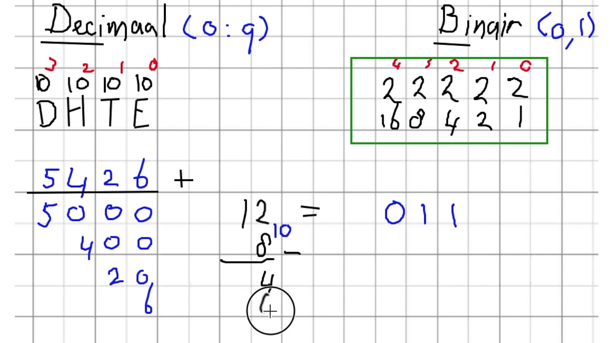

binairestelsel
De binaire stelsel bestaat uit symbolen, ook wel een bit (binary digit) genoemd. Dat bestaat uit de cijfers 0 en 1.
Het binaire getallenstelsel bestaat maar uit twee cijfers: 1 en 0. Een 1 of een 0 wordt ook wel een bit genoemd. Een reeks van acht 1-en en 0-en wordt een byte genoemd. Een halve pagina met tekst op een computer is hetzelfde als 1 KB (ofterwijl KiloByte), 1.000 bytes. In het binaire talstelsel komt iedere positie overeen met een macht van 2. In het binaire talstelsel is bijvoorbeeld het getal 0101 de voorstelling van het getal 5 (= 0 + 4 + 0 + 1). Je kan ook binair omrekenen naar decimaal. Hiervoor hoef je alleen naar de posities 1 te kijken.
